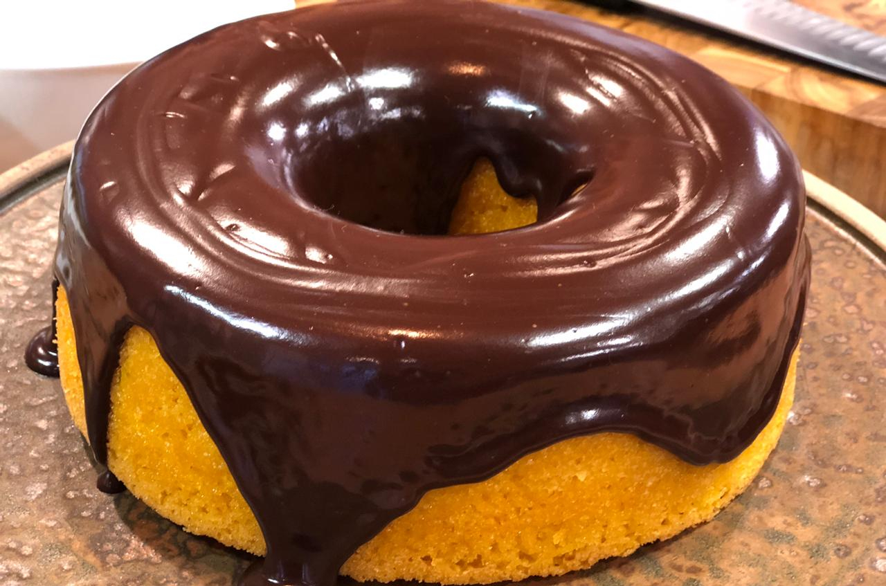

Bolo de Cenoura

Ingredientes
- 3 cenouras médias
- 3 ovos
- 1 xícara de óleo
- 2 xícaras de açúcar
- 2 e 1/2 xícaras de farinha de trigo
- 1 colher de sopa de fermento
- Margarina para untar a forma
Modo de preparo
- Corte as cenouras em pedaços pequenos
- Bata no liquidificador as cenouras, os ovos e o óleo
- Acrescente o açúcar e bata novamente
- Coloque a mistura em uma tigela
- Acrescente a farinha de trigo e misture bem
- Por último, acrescente o fermento
- Unte uma forma com margarina
- Leve ao forno por aproximadamente 40 minutos a 180°
Dica: Ótima sobremesa ou café da tarde!